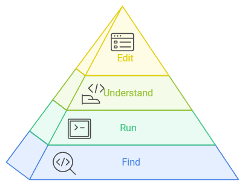

8 Colaboration
When we are talking about teamwork, we can define a hierarchy of code needs in Data Science (Wickham 2024).
In collaborative work, it’s not enough for everyone to use the same tools; it’s also necessary to establish practices that guarantee the efficiency and quality of work in a group.
Hadley Wickham defined 4 hierarchical levels (from the most basic to the most advanced) (Wickham 2024) for the successful use and/or manipulation of code in data science projects:

8.1 Find
Team members need to be able to find code quickly and easily.
Whether it’s to solve a problem, collaborate on a task, or continue someone else’s work, scattered or poorly organised code should always be avoided.
Using a platform like GitLab with well-organised repositories based on Git version control should be the foundation of any project. This includes the need to have an informative README.md file for each project.
It is also advisable to define naming conventions (for files, scripts or folders) that are clear and use intuitive names.
8.2 Run
Everyone working on a project should be able to run the code consistently, without failures due to undocumented or poorly managed dependencies. Using the {renv} package (Ushey and Wickham 2024) allows us to create package libraries per project and track the version of R used. A tool like Docker allows us to go a step further and create isolated environments for distributing and running code that works consistently on different systems.
Writing clear instructions in README on how to run the code and regularly testing scripts on different machines are ways of ensuring the robustness of the code.
8.3 Understand
In a mature team, members should be able to understand each other’s code in order to contribute or solve problems without relying too much on explanations.
Documenting functions in a standard format using R’s {roxygen2} (Wickham et al. 2024) package, or simply adding explanatory comments throughout the code, can help with this understanding.
We want concise but informative comments that explain not only the ‘how’ but also the ‘why’. Doing team code reviews promote common understanding and help improve the technical documentation of scripts and workflows.
8.4 Edit
When changes or improvements are needed to the code, every member of the team should be able to make changes without introducing errors or mess with existing work.
This is where version control with Git is essential, whether to ensure that work is not lost, or to communicate and manage conflicts or inconsistencies.
Descriptive and informative commit messages, working in separate branches and running merge requests for review before integration with the main code are tasks that must be mastered by the whole team and cannot be overlooked.
Implementing automated tests to ensure that new changes don’t break existing code should also be common practice in data science projects.
8.5 Summarising
Communication: All team members need to know not only where to look for information but also how to interact with the code.
Culture of Quality: Adopting consistent standards makes it easier for all levels of the hierarchy to meet requirements.
Common Tools: It’s not enough for everyone to write code in R, it’s also necessary for everyone to use tools like Git and a platform like GitLab.
8.6 Learning assessment
Which tool is used to create isolated environments and guarantee consistent code execution?
From what you’ve learnt, which practices help facilitate the “Edit” level?
Which of the following aspects has been identified as fundamental to success at all levels of the code hierarchy?
8.7 Next
All that remains is to publish our final product. In the next chapter, we’ll make our dashboard publicly available, simply and free of charge.